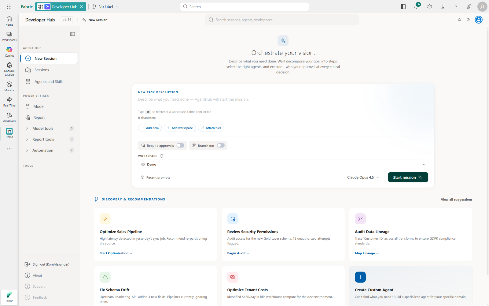
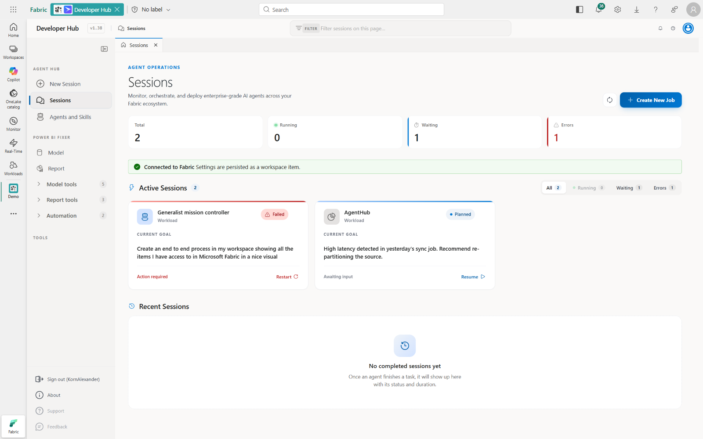
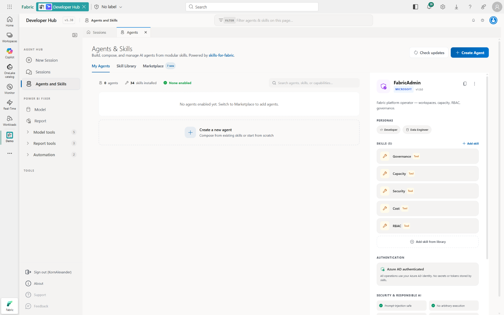
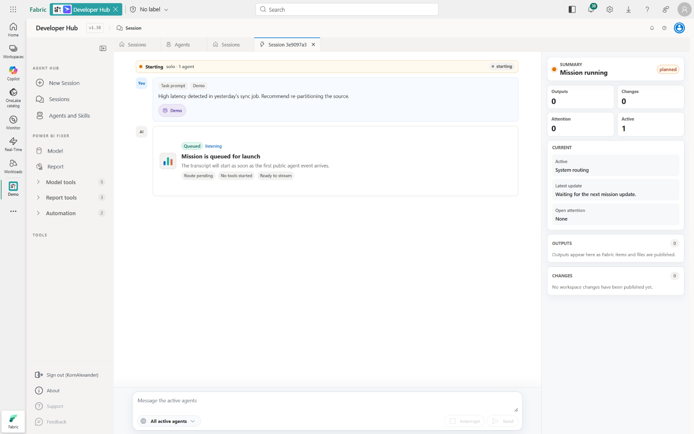
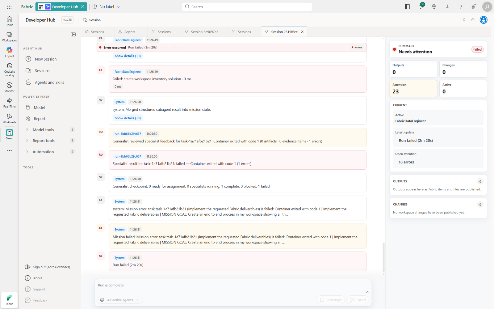
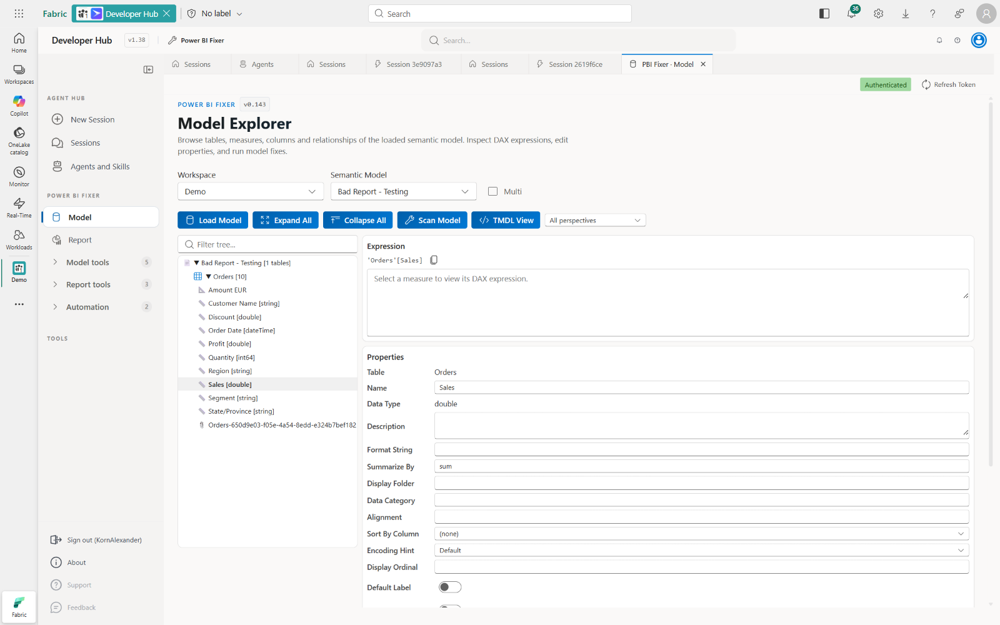
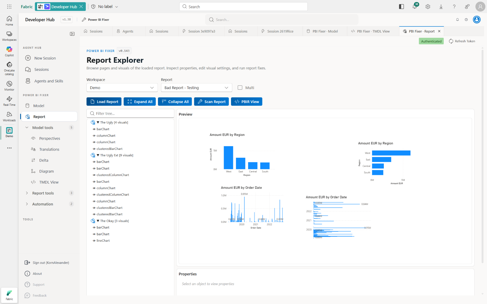
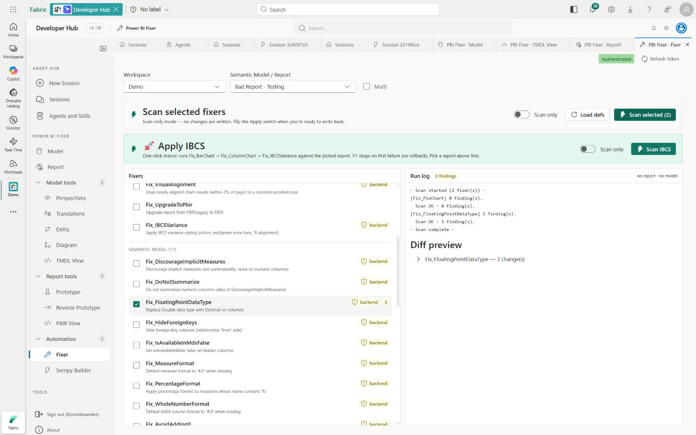
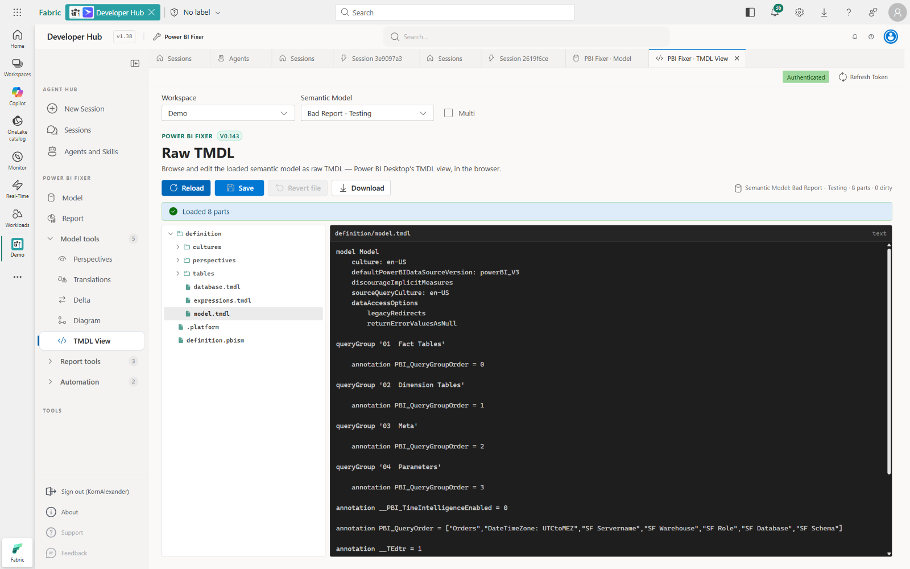

Fabric Developer Hub is a next-generation workload that lets you monitor, orchestrate, and deploy enterprise-grade AI agents directly inside Microsoft Fabric — built around a skill-based agent composition model with human-in-the-loop approvals and live streaming execution.
Co-maintained by Lukasz Obst & Alexander Korn
Fabric Developer Hub is the umbrella platform. It bundles two complementary tools under one Fabric workload: Agent Hub for AI-agent orchestration, and Power BI Fixer for Power BI engineering. The previously standalone Power BI Fixer was merged into the Developer Hub and is now shipped as a first-class tool inside it.
An agent orchestration platform that runs as a native Fabric workload. Build, run, and govern AI agents that touch Lakehouses, Warehouses, Pipelines and Reports.
A Power BI engineering toolkit for scanning, fixing and exploring semantic models and reports. Originally a notebook-native tool, now fully merged into the Developer Hub as its second built-in tool.
Agents are not monolithic. They are composed from modular skills — discrete capabilities that can be mixed, matched, and reused across teams.
| Skill Type | Examples | Purpose |
|---|---|---|
spark-authoring, sqldw-authoring, eventhouse-authoring, powerbi-authoring |
Create and modify Fabric items — notebooks, SQL scripts, pipelines, reports | |
| Consumption | spark-consumption, sqldw-consumption, eventhouse-consumption, powerbi-consumption |
Query and analyze data from Fabric endpoints |
| Utility | check-updates |
Administrative and maintenance operations |
| Agent | Provider | Skills | Description |
|---|---|---|---|
| FabricDataEngineer | Microsoft | 4 | Medallion architectures (Bronze → Silver → Gold), ETL/ELT pipelines, data migration, quality checks |
| FabricAdmin | Microsoft | 3 | Capacity planning, governance, security validation, cost optimization, observability |
| RealtimeAnalytics | Custom | 4 | KQL-based real-time monitoring with Spark ingestion and Power BI dashboarding |
| SalesReporter | Custom | 3 | Weekly sales report generation with Power BI semantic model queries (cloned from FabricDataEngineer) |
From natural-language goal to deployed result — with full visibility and control at every stage.
Describe your goal in plain language and attach Fabric context.
Inspect and edit the AI-decomposed plan before launch.
Watch agents work step-by-step with live reasoning and code output.
Eight pillars built around a Fabric-native, agent-first design.
Build agents from reusable, version-controlled skills. Mix Microsoft-provided skills with custom ones from your team.
Approval gates on production-impacting steps. Agent decision cards show reasoning and let you approve, modify or reject.
Create isolated branches in Fabric workspaces, let agents work there safely, then merge back when validated.
Step-by-step progress with timestamps and durations. Terminal-style code output and typing-cursor reasoning.
AI-powered suggestions based on workspace activity — cost optimization, security audit, lineage tracing.
The full Power BI Fixer toolkit is one of the Hub’s two core tools — 50+ automated fixers, BPA, translations, prototypes.
Azure AD auth, no stored secrets, prompt-injection safe, no arbitrary code execution, OWASP LLM Top 10 aligned.
First-class support for Lakehouses, Warehouses, Pipelines, Notebooks and Reports — color-coded throughout the UI.
The full Power BI Fixer toolkit ships as the second built-in tool inside Developer Hub. Originally a notebook-native tool (from sempy_labs import pbi_fixer), now fully merged into the Hub workload — same engine, native UI, same one-click fixes for semantic models and reports.
One-click scan & fix across report fixers, model fixers, Model BPA and Report BPA. Grouped results with selective execution.
Browse tables, columns, measures, hierarchies, relationships. Edit DAX, properties, display folders. Create measures, calc columns, calc tables.
Navigate pages & visuals with live preview. Scan for violations, fix chart formatting, convert to PBIR, align visuals.
19 best-practice rules across 6 categories with one-click auto-fix. 15 of 19 rules have no auto-fix equivalent in any other tool.
Report-level analysis with automatic PBIRLegacy → PBIR conversion. Catches unused custom visuals, report-level measures and more.
Vertipaq stats by tables, columns, partitions, relationships. Color-coded size bars, cardinality, encoding, Direct Lake support.
Manage metadata translations across all model objects. One-click auto-translate via Azure AI Translator — no API key needed.
Create, edit, delete model perspectives with tri-state checkboxes. Visual table-level summaries with one-click save.
Inspect delta tables — parquet files, row groups, column chunks, column statistics. Essential for Direct Lake optimization.
Capture page screenshots with navigation detection. Export to Excalidraw or SVG. Auto-detects drillthrough and button links.
Auto-generated SVG relationship diagram with table boxes, columns, measures and nearest-edge connection lines.
Version info, credits and links to source code, documentation and the legacy notebook site.
Pie/Bar/Column/Line chart cleanup, IBCS Variance, Column → Bar (IBCS), Page Size to Full HD, Hide Visual Filters, Visual Alignment, Remove Unused Custom Visuals, and more — all one click.
Categories: Data Types · MDX · Documentation · Formatting · Schema · Naming. Fix All / Fix Rule / Fix Row granularity with severity indicators and finding counts.
International Business Communication Standards built in — proper variance bars with green/red coloring, IBCS theme application, standardized axis & data label formatting.
20 common language codes built in. Auto-translate via Azure AI / SynapseML, preview diff before applying — no API keys, no cost.
Model summary, partition & column-level breakdown with color-coded % bars (red >30 %, orange >10 %, green ≤10 %). Direct Lake residency & temperature included.
Capture every report page as a screenshot with auto-detected page navigation and drillthrough arrows. Export the whole flow to .excalidraw or .svg.
The Power BI Fixer engine is open source and built on top of Semantic Link Labs by Michael Kovalsky. The same engine that powers the standalone notebook now ships natively inside Developer Hub.
A visual tour through the Agent Hub experience inside the Developer Hub workload, captured live from the running stack.
Describe what you need done in natural language. Pick a workspace, attach Fabric items, toggle approvals and branching — the Agent Hub does the rest.
@-mention for Fabric items, files and workspaces
Monitor every running, waiting and failed mission across your workspace. Restart, resume or cancel sessions with one click.

Browse Microsoft-provided and custom agents, inspect skill composition, personas, authentication and security flags — all powered by skills-for-fabric.

Every mission opens in its own tab with a structured transcript, live status panel and per-step approval gates. Resume waiting missions, send messages to the active agents, or interrupt at any time.

Watch agents work in real time with streamed reasoning, tool calls and error cards. When something fails, the Needs Attention panel surfaces the exact run, error count and current active specialist.

Live captures from the Power BI Fixer tool inside Developer Hub, running against the Bad Report - Testing reference report.
Browse tables, columns, measures and relationships of the loaded semantic model. Inspect DAX, edit properties, navigate the model exactly like in Power BI Desktop — but in the browser, with one-click model fixes wired in.

Navigate pages and visuals with live previews. Spot questionable charts, page sizes and unused custom visuals before opening Power BI Desktop.

Pick the fixers you care about, scan in read-only mode, inspect the diff and apply when ready. Below: a live scan of Fix_PieChart + Fix_FloatingPointDataType against Bad Report - Testing — 3 findings on column data types.

Browse and edit the loaded semantic model as raw TMDL — the same view as Power BI Desktop's TMDL editor, but in the browser. Reload to refresh from the workspace, save to push changes back via the XMLA endpoint.
definition/ tree (model, tables, cultures, perspectives)
From natural-language goal to deployed pipeline in three steps.
Run the full Developer Hub stack locally with Docker — backend, frontend and Fabric DevGateway.
docker run --privileged --rm tonistiigi/binfmt --install amd64198.18.0.0/16) to avoid bridge subnet conflicts